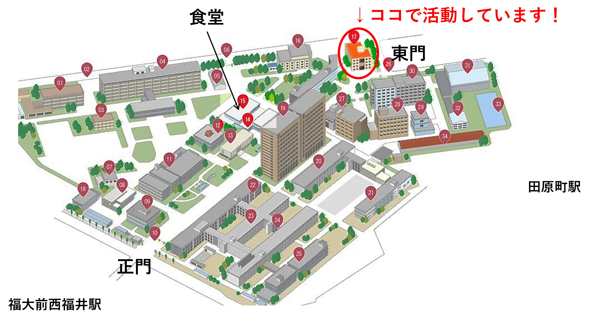

新歓イベント
募集パート
随時更新。詳細は X・ Instagram をご確認ください。
活動について

場所：課外活動棟2F 練習室
日時：
月曜日 18:30〜20:30
水曜日 18:30〜20:30（後期一部期間）
金曜日 16:30〜19:30
土曜日 9:30〜12:30
よくある質問
Q : 男女比は？
A : 約１：１です。男女関係なく仲良しです！
Q : 初心者でもいいですか？
A : 大歓迎です！団員の半数は大学から今の楽器を始めています。 吹奏楽・弦楽部出身の経験者も多く、初心者も楽しめる環境です。
Q : 1年生じゃないけどいいですか？
A : 2・3年生からの入団実績もあります。大歓迎ですよ。
Q : アルバイト・学業との両立はできますか？
A : 週4でアルバイトしながらフル単の団員もいます。 成績に影響が出るほどの負担にはならないと思います。
Q : 入団に必要なものは何ですか？
A : 特にありません。チューナーや楽譜ファイルがあると便利です。